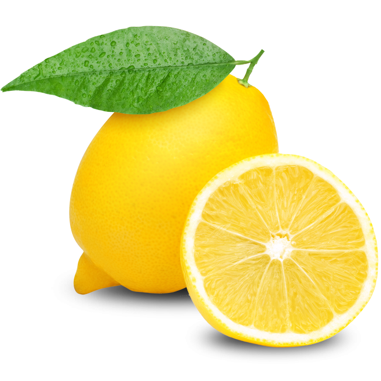

My name is Joshua DeGraff. I am currently a Senior at North Central College pursuing a major in Computer Science, although I originally pursued Graphic Design before making the switch after my first semester.
I enjoy working in Adobe Animate. I'm self taught in the program, and I've been using it for art and animation for the past four years.
I have a passion for things that make me think. I particularly enjoy puzzle solving games where a particular path must be taken to reach a certain end goal, such as in games like Minesweeper and Baba is You.